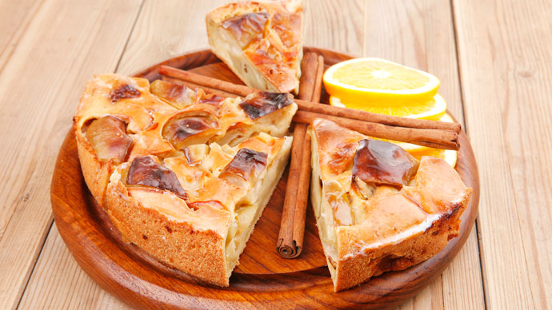

Шарлотка с яблоками
| Продукты |
Кол-во |
| Cахар | 1 стакан |
| Яйцо куриное | 5 штук |
| Мука пшеничная | 1 стакан |
| Яблоки | 7 штук |
| Сода | ½ чайной ложки |
| Масло растительное | 1 столовая ложка |
Инструкция:
- Разогреть духовку.
- Отделить белки от желтков.
- Белки взбить в крепкую пену, постепенно добавляя сахар.
- Продолжать взбивать, добавляя по одному желтки, затем гашеную соду и муку.
- Тесто по консистенции должно напоминать сметану.
